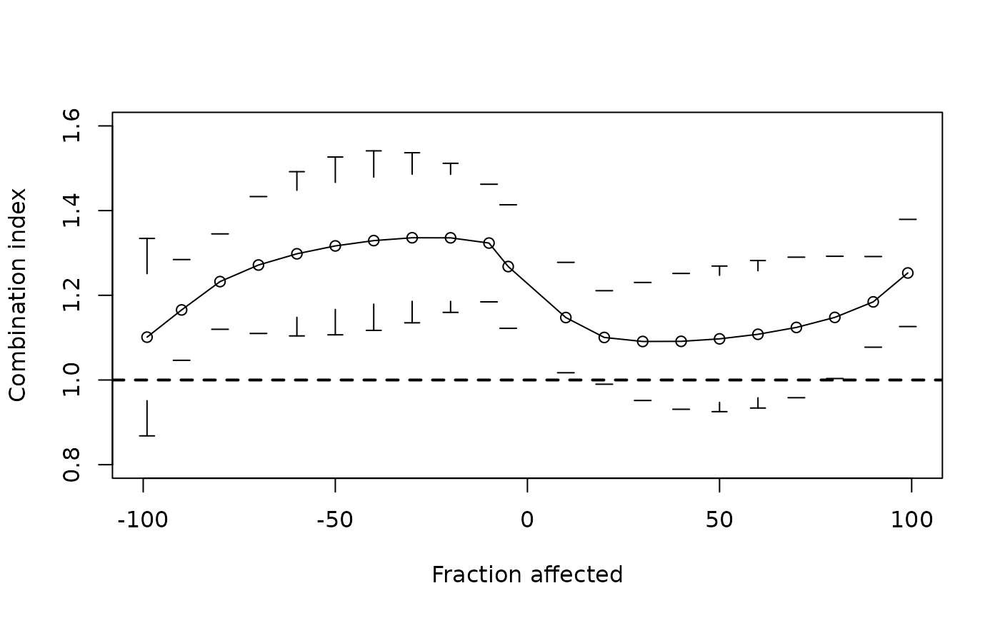

Data from heavy metal mixture experiments
metals.RdData are from a study of the response of the cyanobacterial self-luminescent metallothionein-based whole-cell biosensor Synechoccocus elongatus PCC 7942 pBG2120 to binary mixtures of 6 heavy metals (Zn, Cu, Cd, Ag, Co and Hg).
Usage
data("metals")Format
A data frame with 543 observations on the following 3 variables.
metala factor with levels
AgAgCdCdCoCoAgCoCdCuCuAgCuCdCuCoCuHgCuZnHgHgCdHgCoZnZnAgZnCdZnCoZnHgconca numeric vector of concentrations
BIFa numeric vector of luminescence induction factors
Source
Martin-Betancor, K. and Ritz, C. and Fernandez-Pinas, F. and Leganes, F. and Rodea-Palomares, I. (2015) Defining an additivity framework for mixture research in inducible whole-cell biosensors, Scientific Reports 17200.
Examples
library(drc)
## One example from the paper by Martin-Betancor et al (2015)
## Figure 2
## Fitting a model for "Zn"
Zn.lgau <- drm(BIF ~ conc, data = subset(metals, metal == "Zn"),
fct = lgaussian(), bcVal = 0, bcAdd = 10)
## Plotting data and fitted curve
plot(Zn.lgau, log = "", type = "all",
xlab = expression(paste(plain("Zn")^plain("2+"), " ", mu, "", plain("M"))))
## Calculating effective doses
ED(Zn.lgau, 50, interval = "delta")
#>
#> Estimated effective doses
#>
#> Estimate Std. Error Lower Upper
#> e:1:50 3.34241 0.18363 2.96627 3.71855
ED(Zn.lgau, -50, interval = "delta", bound = FALSE)
#>
#> Estimated effective doses
#>
#> Estimate Std. Error Lower Upper
#> e:1:-50 1.508038 0.082849 1.338329 1.677746
ED(Zn.lgau, 99.999,interval = "delta") # approx. for ED0
#>
#> Estimated effective doses
#>
#> Estimate Std. Error Lower Upper
#> e:1:99.999 2.258720 0.058849 2.138173 2.379267
## Fitting a model for "Cu"
Cu.lgau <- drm(BIF ~ conc, data = subset(metals, metal == "Cu"),
fct = lgaussian())
## Fitting a model for the mixture Cu-Zn
CuZn.lgau <- drm(BIF ~ conc, data = subset(metals, metal == "CuZn"),
fct = lgaussian())
## Calculating effects needed for the FA-CI plot
CuZn.effects <- CIcompX(0.015, list(CuZn.lgau, Cu.lgau, Zn.lgau),
c(-5, -10, -20, -30, -40, -50, -60, -70, -80, -90, -99, 99, 90, 80, 70, 60, 50, 40, 30, 20, 10))
## Reproducing the FA-cI plot shown in Figure 5d
plotFACI(CuZn.effects, "ED", ylim = c(0.8, 1.6), showPoints = TRUE)
